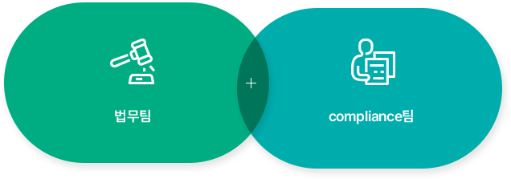
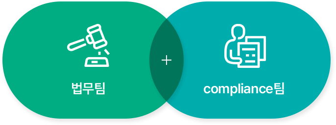

지속가능경영
투명경영
두산건설은 신뢰와 투명경영을 바탕으로
새로운 미래와 목표를 향해 나아가고자 합니다.
윤리규범
두산건설은 회사의 지속적인 성장과 발전을 위해 고객 중심의 경영철학을 실현하고,
투명경영과 혁신을 통하여 회사의 경쟁력을 높이고 사회적 책임을 실천하고자 합니다.
이를 위하여 두산건설은 정직과 투명성을 근간으로 하는 윤리규범을 제정하여
임직원의 업무 수행 원칙으로 적용하고 있으며, 협력사 등 제3자에게도 함께 준수할 것을 권장하고 있습니다.
추진조직
 
임직원이 공정하고 투명한 기업 활동을 수행할 수 있도록
법무팀과 compliance팀을 윤리경영 주요 추진조직으로 선정하여 운영하고 있습니다.
법무팀은 윤리규범의 제정과 해석, 임직원 교육을 진행하고,
compliance팀은 자체 감사활동과 백서 제도 운용을 통하여 임직원 윤리의식을 고취하는 등
지속적인 자정활동을 통해 투명한 회사로 거듭나기 위해 노력하고 있습니다.
내부통제 제도
2006년 내부통제 제도를 도입하여 정확하고 신뢰성 있는 재무보고 체제의 유지, 효과적이고 효율적인 업무 수행의 보장,
관련 법규 및 내부 정책을 준수함으로써 경영 목적을 달성할 수 있도록 지속적으로 노력하고 있습니다.